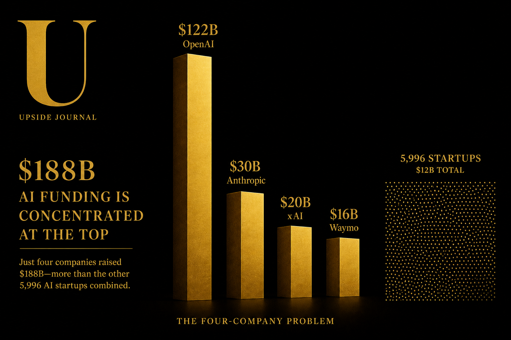

The headline number is staggering: $300 billion poured into 6,000 startups globally in Q1 2026. That's up over 150% quarter-over-quarter and year-over-year. By any measure, this is the biggest venture quarter in history.
But the headline is also a lie — or at least, deeply misleading.
Because when you strip away the mega-rounds, the picture for most founders looks nothing like the record books suggest.
The Four-Company Problem
Here's the number that matters: $188 billion — 63% of all global venture funding in Q1 2026 — went to exactly four companies.
| Company | Round Size | Sector |
|---|---|---|
| OpenAI | $122 billion | Frontier AI |
| Anthropic | $30 billion | Frontier AI |
| xAI | $20 billion | Frontier AI |
| Waymo | $16 billion | Autonomous Vehicles |
Four companies. $188 billion. The remaining 5,996 startups shared the rest.
According to Crunchbase, AI captured 80% of total global venture funding in Q1 — up from 55% in Q1 2025. Late-stage funding hit $246.6 billion (up 205% year-over-year), but it was concentrated in just 158 companies that each raised $100 million or more.
Early-stage funding? $41.3 billion across 1,800 deals. Respectable — but dwarfed by the late-stage numbers and, crucially, with fewer deals than the same period last year.
More capital, fewer cheques. That's not a boom. That's concentration.

Where the Smart Money Is Moving
Beyond the frontier AI labs, the capital flow tells a different story about what sophisticated investors actually believe in:
Physical AI and infrastructure. Unlike the cloud and mobile eras, this cycle is being built in the physical world. Massive capital is flowing into autonomous vehicles, robotics, semiconductors, data centres, and manufacturing. The bet isn't just on intelligence — it's on intelligence that moves things.
Defence and prediction markets. Ten companies outside the Big Four raised rounds of $1 billion or more in Q1. Defence tech and prediction markets featured prominently — a signal that investors are pricing in geopolitical uncertainty alongside technological disruption.
Geographic concentration. US-based companies raised $250 billion — 83% of global venture capital in Q1. China came second with $16.1 billion. Everyone else is fighting for single-digit percentages. If you're building outside the US, the fundraising environment is fundamentally different from what the aggregate numbers suggest.
The Founder's Dilemma
If you're a seed-stage founder reading this, the honest assessment is uncomfortable.
The venture industry has never had more capital — and it has never been harder to raise a Series A if you're not building in AI. The "record-breaking" quarter is functionally irrelevant to the vast majority of startups. Investor attention has narrowed, LP allocations are chasing the same themes, and the definition of "venture-scale" has been warped by rounds that would have been considered sovereign wealth fund deployments five years ago.
The counter-argument is that this concentration creates opportunity. When every generalist fund is chasing frontier AI, specialist investors in fintech, health tech, climate tech, and SaaS have less competition for deals — and the founders building in those sectors have more leverage with the investors who remain focused.
But that's a theory. The data shows something simpler: if you're raising capital in 2026, your strategy has to account for the fact that the venture market you're entering is not the one the headlines describe.
More capital, fewer cheques. That's not a boom. That's concentration.
What This Means for Cannes
In three weeks, thousands of brand executives, tech founders, and media companies will converge on the French Riviera for Cannes Lions 2026. The conversations in the cabanas will be about partnerships, media budgets, and — inevitably — AI.
The founders who walk in with a clear-eyed understanding of the capital landscape will have a material advantage. Because the brands and agencies attending Cannes aren't stupid — they can read the same Crunchbase reports. They know the AI funding cycle is concentrated and potentially fragile. They're looking for partners who understand the market as it actually is, not as the press releases describe it.
At The Pitch Journey, we've been tracking how this capital concentration affects emerging market founders specifically. Through the Semaform Foundation and our work with the Handshake Summit at UNCSW, we've seen first-hand that the most resilient startups aren't the ones chasing the largest rounds — they're the ones building systems that convert relationships into revenue, regardless of the fundraising climate.
The $300 billion quarter is real. The question is whether your startup is in the 0.1% that benefits from it — or the 99.9% that needs a different playbook entirely.
Watch: Venture Capital in 2026 — AI, Liquidity & Startup Funding Explained (Nothing Ventured)
Related: Read Cannes Lions Is a $3 Billion Networking Failure — Here's the Data for our take on why the festival's $3B economy fails at converting relationships into revenue.